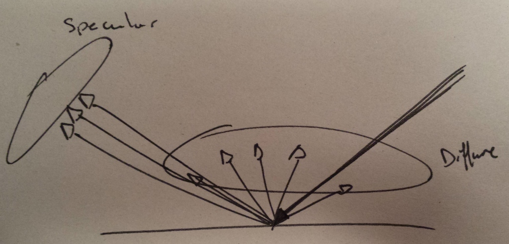
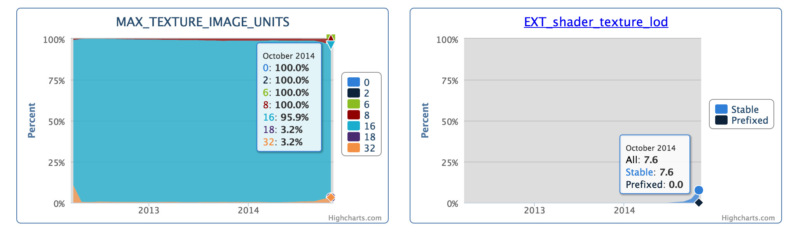

PBR prototype
sketchfab demo at siggraph 2014
by Cedric Pinson / @trigrou
@sketchfab
Light [5]
Micro geometry
Surface rough
Surface plane
Light interaction
Reflection
Refraction
Metal
Light is reflected
Refracted light is absorbed
Non Metal
Light is reflected
Light is refracted
Simplification
Diffuse / Specular
Microfacet Specular BRDF
Specular [5]
F: Fresnel (F_Schlick)
D: Normal distribution function (D_GGX)
G: Geometry function (G_SmithGGX)
Diffuse
PBR components
- Materials (Albedo/Roughness/Metalness)
- HDR Environments
- Area lights
- Camera
- Use reference mitsuba [5]
Environment
Use enfironment as lightsource
image from hdri-hub.com [7]Diffuse
precompute irradiance [1]
cubemap / spherical harmonics
image from hdri-hub.com [7]Irradiance

Pseudo code Diffuse
for ( int i = 0; i < nbSamples; i++ ) {
vec2 u = getSample(i);
vec3 h = importanceSampleCos(u);
vec3 l = h;
vec3 dir = iblTransform * l;
vec3 env = textureCubeLod( ibl, dir, 0.0 );
contrib += env / PI;
}
Specular
prefilter roughness or more [2]
importance sampling [3]
image from hdri-hub.com [7]Pseudo code Specular
for ( int i = 0; i < nbSamples; i++ ) {
vec2 u = getSample(i);
vec3 h = importanceSampleGGX(u);
vec3 l = reflect(v, h);
float g = g_smithGGX( roughness, NoV, NoL);
vec3 f = f_schlick( f0, NoH);
float d = d_ggx( NoH, roughness);
vec3 dir = iblTransform * l;
vec3 env = textureCubeLod( ibl, dir, 0.0 );
contrib += env * g * f * d / ( 4.0 * NoV * NoL );
}
Importance sampling
Use texture lod as approximation
Implementation
- Texture lod is the minimum tool to store data
- hdr is also a requirement
WebGL Stats [4]
WebGL Stats [4]
Issues
- Texture lod extension is not well supported
- Float tetxure extension is not 100% supported
Float texture issue
Need to use something like RGBE [8]
Need to do trilinear manually
Texture lod issue
Can't use once cubemap
Can use multi cubemap [9]
// Ok, this is ugly, but there is an explanation ...
vec3 ComputeEnvColor(float roughness, vec3 refl)
{
float a = roughness * roughness * 6.0;
if ( a < 1.0)
return mix(textureCube(envMap0, refl).rgb, textureCube(envMap1, refl).rgb, a);
if ( a < 2.0)
return mix(textureCube(envMap1, refl).rgb, textureCube(envMap2, refl).rgb, a - 1.0);
if ( a < 3.0)
return mix(textureCube(envMap2, refl).rgb, textureCube(envMap3, refl).rgb, a - 2.0);
if ( a < 4.0)
return mix(textureCube(envMap3, refl).rgb, textureCube(envMap4, refl).rgb, a - 3.0);
if ( a < 5.0)
return mix(textureCube(envMap4, refl).rgb, textureCube(envMap5, refl).rgb, a - 4.0);
return textureCube(envMap5, refl).rgb;
}
Cubemap seams
No ARB_seamless_cube_map extension [10]
AMD cubemap gen has code to fixup [1]
image from Ignacio Castaño post [12]
Panorama alternative
Can use panorama with lod inline
Panorama issue
Panorama suffer from pole low resolution
Virtualize UV for lod
vec4 computeUVForMipmap( const in float level, const in vec2 uv, const in vec2 size, const in float maxLOD ) {
float widthForLevel = pow( 2.0, maxLOD-level);
// the height locally for the level in pixel
vec2 sizeForLevel = vec2( widthForLevel, widthForLevel - 2.0 ); // -2.0 avoid bleeding on the top
// globally the texture is square so width = height for texture size
float globalOffsetVInTexel = size.x - sizeForLevel.x; // in texel
float oneOnSizeX = 1.0 / size.x;
// we will need to transform our original uv to the mipmap level space
vec2 ratio = sizeForLevel * oneOnSizeX;
// u = u * ratioU
// v = v * ratioV + offsetY / height
vec2 uvGlobal = uv * ratio;
float globalOffsetV = globalOffsetVInTexel * oneOnSizeX;
uvGlobal.y += globalOffsetV;
// zw contains the max box of the local mip level
return vec4( uvGlobal.x, uvGlobal.y, ratio.x, ratio.y + globalOffsetV );
}
Demo
Panorama example
Sketchfab siggraph prototype [11]
Resources
1 Sebastien Lagarde, AMD Cubemapgen for PBR2 Brian Karis, Epic UE4 shading
3 GPU based importance sampling
4 WebGL stats
5 Natty Hoffman, Physics and Math of Shading
6 PBR basics from marmoset
7 HDR environment hdri-hub.com
8 HDR (RGBE) file format
9 Alexandre Pestana, PBR sample in webgl
10 Seamless cube map extension
11 Sketchfab PBR prototype
12 Ignacio Castaño, post about cubemap seams
13 Siggraph 2013
14 Siggraph 2014
15 PBR from theory to implementation
16 Hammersley importance sampling
17 Mitsuba PBR renderer
Thank you
by Cedric Pinson / @trigrou@sketchfab